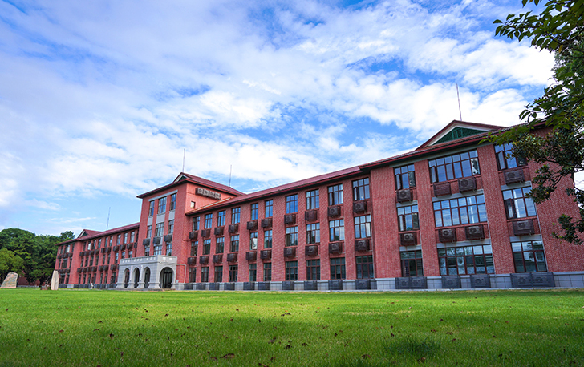

基础支撑

湖南农业大学卓越工程师学院在交叉学科研究院的基础上成立，聚焦交叉学科的基础支撑体系建设，以满足国家和地方重大战略需求。通过搭建学科交叉平台、强化多学科协同创新、推动人才培养与学术提升，以及提供科技与社会服务，学院努力实现科学研究和人才培养的深度融合。
（1）学科交叉平台建设
学院依托湖南农业大学交叉学科研究院，整合优质科研资源，打造开放共享的学科交叉平台。打破学科壁垒，促进多领域知识的有机融合。学院着力打造智慧农业、智能小农机、农业无人技术三大特色领域，推动传统农业科学与现代工程技术的结合，为解决农业领域的复杂问题提供创新路径。在平台建设过程中，注重引入国内外先进的研究理念和技术手段，通过建立高标准的实验平台和研究中心，形成“问题导向+学科交叉+技术支撑”的学生培养模式。学院还通过与国内外高校、科研院所和企业的合作，促进跨领域的学术交流与技术合作，拓展学科交叉的广度与深度。为学科交叉的实践探索提供了坚实基础。
（2）多学科协同创新
多学科协同创新是学院交叉学科基础支撑体系的核心内容。学院秉持“以需求为导向”的理念，聚焦国家重大战略需求和区域发展目标，探索多学科融合的创新模式。在粮食安全、生态环保、智慧农业和乡村振兴等关键领域，学院发挥学科交叉的优势，推动农业科学、工程技术与信息技术的协同发展。学院还通过跨学科科研团队的建设，整合多学科资源，共同攻克重大科研难题。学院将生态环境保护与农业生产相结合，研究如何通过工程技术的创新来解决农业资源浪费、生态环境恶化等问题。此外，在智能农业领域，学院积极引入人工智能、大数据和物联网技术，为现代农业发展提供智能化解决方案。通过协同创新，学院为科学研究注入新动力，同时为地方经济和社会发展提供有效支撑。
（3）人才培养与学术提升
学院以培养创新型、复合型高层次人才为目标，建立了基于学科交叉的全新培养体系。在本科、硕士和博士等不同层次的教育中，学院注重学生基础学科能力的培养，同时通过多学科课程体系设计，帮助学生掌握不同领域的专业知识。学院特别重视实践能力的培养，通过创新实验室、科研项目参与和企业实习等形式，为学生提供丰富的实践机会。此外，学院通过邀请国内外知名专家学者开展学术讲座、联合研究等活动，为学生创造高质量的学习和研究环境。学院还支持学生跨学科学习和研究，鼓励他们开展创新性课题研究。通过这一系列举措，学院为学生的学术发展提供了良好的平台，同时也推动了教育质量的全面提升。
（4）科技与社会服务
学院积极响应国家科技发展战略，充分发挥学科交叉的优势，为农业科技进步与产业升级提供全方位支持。学院依托交叉学科研究院和卓越工程师学院的平台，组织科技成果转化活动，推动科研成果在实际生产中的应用。在粮食生产、生态农业、智能农机等领域，学院与地方政府和企业合作，共同推动农业科技的创新和推广。此外，学院还通过跨领域的社会服务项目，为乡村振兴战略提供技术支持。例如，学院组织科研团队深入农业生产一线，为农民提供技术培训和咨询服务，帮助他们提高生产效率和经济效益。